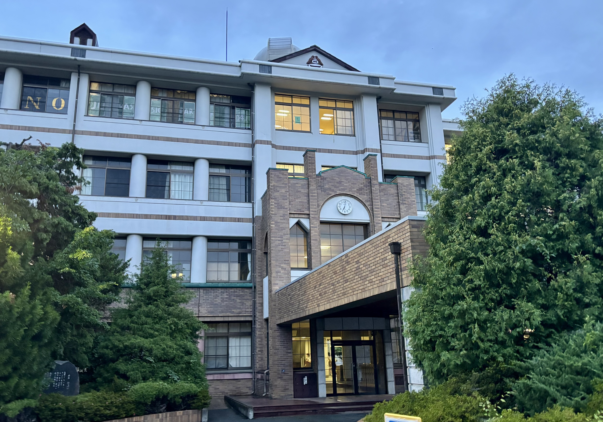
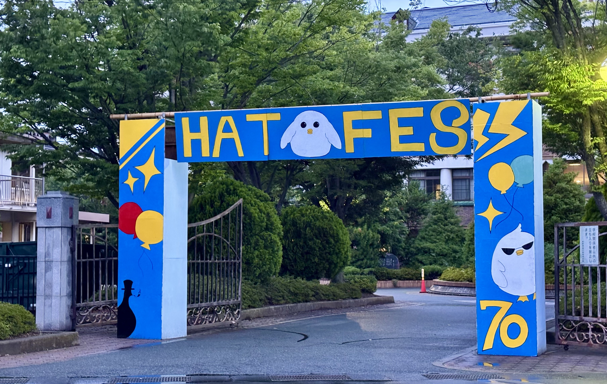

第70回 屋代高校 鳩祭
2026.6.26 Fri - 6.28 Sun一般公開 27-28日
Latest News
Festival Highlights

About Hatosai & Theme
歴史と伝統を紡ぐ、屋代高校最大の祭典。
屋代高校は数少ない公立中高一貫校で、鳩祭でも6学年の個性が感じられます。中でも学級展は、屋代生の発想力を存分に活かした創造性のある内容で、毎年同じものが無くわくわくするものばかりです。
今年度は70周年ですので、委員会、生徒、教員ともにより多くの方々と楽しめる鳩祭をつくります！一緒に楽しみましょう！
第70回テーマ：「SPARK」
第70回鳩祭のテーマは「SPARK」に決定しました！
SPARKというテーマには、「一人一人の鳩祭を楽しむ気持ちやこんなことやってみたい！という思い、そしてそこから生まれる新しいアイデアと実践という、小さな火花がたくさん集まって大きな輝きを持った第70回鳩祭をつくる」という思いが込められています。
第70回という大きな節目を迎える今年、伝統を大切にしながらも新しいことに挑戦し、来場者の皆様の心にも鮮やかな「SPARK」を残せるような、最高の文化祭を創り上げます。
Visitor Information
Sponsors協賛企業
第70回鳩祭は、以下の企業・団体の皆様の温かいご支援によって開催されています。
（企業名 五十音順・敬称略）